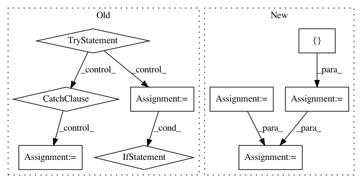

a334cd6f04461ca8d57f35f0ebde68f5520fd689,mloop/neuralnet.py,SingleNeuralNet,load,#SingleNeuralNet#Any#Any#,173
Before Change
saver_path = str(archive["saver_path"])
filename = os.path.basename(saver_path)
searching = True
try:
// Check if the neural net archive exists at the location specified
// in the passed archive dictionary.
self.saver.restore(self.tf_session, os.path.join(".", saver_path))
searching = False
except ValueError:
// Check if a neural net archive with the same name exists in
// any other given paths.
if extra_search_dirs:
j = 0
j_max = len(extra_search_dirs)
while searching and j < j_max:
search_dir = extra_search_dirs[j]
full_path = os.path.join(search_dir, filename)
try:
self.saver.restore(self.tf_session, full_path)
searching = False
except ValueError:
j += 1
// Throw an error if the file wasn"t found.
if searching:
message = "Could not find neural net archive {filename}.".format(filename=filename)
self.log.error(message)
raise ValueError(message)
def save(self):
"""
Exports the net to an archive dictionary.
"""
After Change
"""
// Set default value of extra_search_dirs if necessary.
if extra_search_dirs is None:
extra_search_dirs = []
// Get the saved filename and construct a list of directories to in which
// to look for it.
self.log.info("Loading neural network")
saver_path = str(archive["saver_path"])
saved_dirname, filename = os.path.split(saver_path)
saved_dirname = os.path.join(".", saved_dirname)
search_dirs = [saved_dirname] + extra_search_dirs
// Check each directory for the file.
for dirname in search_dirs:
try:
full_path = os.path.join(dirname, filename)
self.saver.restore(self.tf_session, full_path)
return
except ValueError:
pass
// If the method hasn"t returned by now then it"s run out of places to
// look.
message = "Could not find neural net archive {filename}.".format(filename=filename)
self.log.error(message)
raise ValueError(message)
In pattern: SUPERPATTERN
Frequency: 3
Non-data size: 9
Instances
Project Name: michaelhush/M-LOOP
Commit Name: a334cd6f04461ca8d57f35f0ebde68f5520fd689
Time: 2020-06-15
Author: zakven@mit.edu
File Name: mloop/neuralnet.py
Class Name: SingleNeuralNet
Method Name: load
Project Name: biolab/orange3
Commit Name: 959f696b68e68ab67ea44b49dd1070c217ee62b1
Time: 2016-09-13
Author: marko.toplak@gmail.com
File Name: Orange/preprocess/transformation.py
Class Name: Transformation
Method Name: __call__
Project Name: brian-team/brian2
Commit Name: 25ca9c249fd3e11bb166b42ffeb2433036964bd1
Time: 2017-07-05
Author: charleetje@gmail.com
File Name: brian2/codegen/generators/GSL_generator.py
Class Name: GSLWeaveCodeGenerator
Method Name: write_dataholder